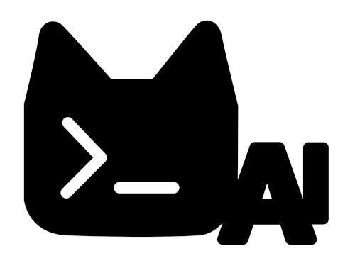

iOS app
PocketMai
Native conversations, voice, documents, OCR, browser handoff, and background replies.
Download on the App Store ↗
PocketMaiPocketMai · open source · powered by MaiCore
↗A native iOS app and an agent CLI for macOS, Linux, and Android. Choose the model, decide which tools it can use, steer every subagent, and keep your conversations on your terms.
Open source on GitHub ↗Two interfaces
The same MaiCore engine in the app and the terminal.Native conversations, voice, documents, OCR, browser handoff, and background replies.
Download on the App Store ↗Terminal-native chat, tools, memory, skills, protocols, and full agent supervision.
curl -fsSL https://raw.githubusercontent.com/trufae/pocketmai/main/www/install.sh | sh
Why PocketMai
See the work, change direction, and set clear boundaries.
Full subagent control
Follow the whole agent tree and each child’s output, transcript, status, and usage. Send a message, focus one agent, pause and continue it, or stop a branch.
Editable context
Edit, undo, trim, archive, search, or compact with a focus. Linked tool calls stay valid.
Live steering
New guidance joins at the next safe boundary without throwing away progress.
Clear permissions
Allow once, always allow, edit arguments, deny, or cancel. Each agent sees only what you enabled.
Your stack
Apple Intelligence, OpenAI-compatible providers, local models, skills, plugins, MCP, and ACP.
Local-first
Keep the model, documents, memory, and useful tools close to you.
With an on-device or local provider selected, normal conversations, project memory, attachments, OCR, and local tools can stay off the internet.
Use Apple Intelligence on device, local MLX models on supported iPhones, or connect to Ollama, llama.cpp, and other local endpoints.
Native calls when available; JSON, XML, and text fallbacks when they are not. The hybrid tool proxy keeps the common tools direct and the long tail compact.
Read images and scanned documents with Apple Vision, or use a local Tesseract installation from the CLI—without uploading the page.
Chats, system prompts, project memory, todos, and context controls remain available locally between sessions.
Pocket-sized. Mai-ghty capable.